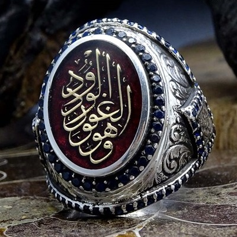
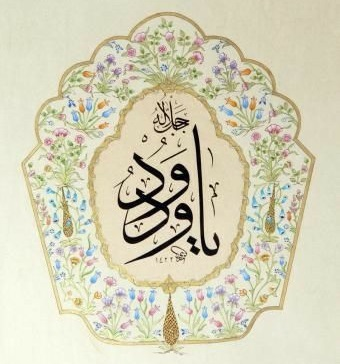
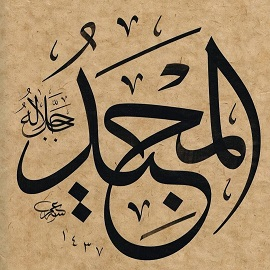

Allah için ikişer kere kullanılan iki güzel isim: 
Bu iki ayette iki isim yan yana, birbirini tamamlıyor.
85:14-15
vehuvel-gafûr, el-vedûd, zul’arş, el-mecîd
O'dur gerçek bağışlayıcı, sevgide kapsayıcı, Arşın sahibi, şanı yüce
Birinci kelimenin sevgiyle bağlantısı, onu bâtıl muskalarda en sık yazılan, bâtıl fallarda en çok söylenen isim haline getirmiş: 
11:90
inne rabbî rahîmun vedûd
Rabbim çok merhametlidir; sevginin kaynağıdır
Kur'ân-ı Kerîm'de vedûd ismi esmâ-i hüsnâdan olan rahîm ve gafûr isimleriyle birlikte iki âyette geçmektedir (11/90; 85/14). Ayrıca vüd kavramı fiilî sıfatların kuruluşunda Allah'a nisbet edilmektedir. Bu âyetlerin birinde Cenâb-ı Hakk'ın iman edip sâlih amel işleyenler için gönüllerde sevgi yaratacağı ifade edilmektedir (19/96).
Kaynak: İslam Ansiklopedisi
Diğer kelime el-Mecîd ise iki yerde Kuran için, iki yerde Allah için sıfat olmuş: 
Her namazda okunan salâvâtın içindeki bu ifade kulağa çok tanıdık geliyor. Hat eseri olarak bulamadım.
11:73
innehû hamîdun mecîd
Her övgüye layık olan O'dur; şanı çok yüce olan O!